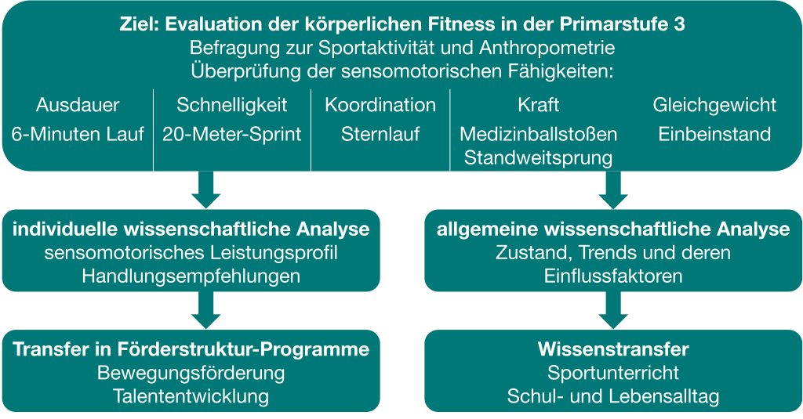

Wozu BeKiGeKi?
Motivation
Jedes einzelne Kind ist die Zukunft unserer Gesellschaft, es ist schutzbedürftig und darüber hinaus schutzbefohlen. Hieraus geht sowohl eine implizite Verantwortung als auch eine explizite Aufforderung für die Gesellschaft hervor, welche insbesondere von den Bezugspersonen in den unmittelbaren “Settings” der Kinder (z. B. Familie, Schule und Verein) wahrgenommen werden sollte.
Einen bedeutenden Einfluss zum Schutz vor Krankheiten hat dabei ein gesunder Umgang mit körperlicher Aktivität und Ernährung. Das Selbstverständnis von körperlicher Aktivität und Ernährung ist Teil eines lebenslangen Bildungs- und Reflexionsprozesses, der eng mit der eigenen Risikowahrnehmung und Selbstwirksamkeit verflochten ist. In diesem Kontext sind Selbstbestimmung und Fürsorge wesentliche ethische Prinzipien, welche für jedes einzelne Kind im Rahmen der Gesundheitsförderung erlebbar sein sollten.
Daher liegt in der individuell angemessenen und sozial ausgewogenen Gesundheitsförderung ein sehr bedeutsames individuelles und gesellschaftliches Potential. Die Entwicklung eines gesünderen körperlichen, seelischen und sozialen Älterwerdens im Kindesalter ist eines der wichtigen Potentiale für die Zukunft einer Gesellschaft im demografischen Wandel.
Die Förderung von Bewegung und eines gesunden Ernährungsverhaltens im Kindesalter legen einen entscheidenden Grundstein für die Gesundheitsförderung und Krankenprävention im frühen und späteren Erwachsenenalter.
Ausgangslage
Die körperliche Fitness (KF) ist ein hochsignifikanter Gesundheitsmarker und ein prädiktives Maß für die Bewertung aktivitätsbezogener Körperfunktionen (Ortega et al., 2008). Sie umfasst gesundheits- und fähigkeitsbezogene Eigenschaften wie kardiorespiratorische Ausdauer, Muskelkraft, Schnelligkeit, Koordination und Gleichgewicht (Caspersen et al., 1985).
Kardiorespiratorisches und muskuläres Training steht in Zusammenhang mit einem geringeren Risiko an verschiedenen nicht übertragbaren Krankheiten zu erkranken, die weltweit die häufigste Todesursache darstellen (Caspersen et al., 1985), darunter kardiovaskuläre Risikofaktoren wie Hypertonie, Insulinresistenz, erhöhter Blutzuckerspiegel und kindliche Adipositas (Artero et al., 2011; F. Llorente-Cantarero et al., 2012; F. J. Llorente-Cantarero et al., 2012; Lopes et al., 2012; Ortega et al., 2008; Rodrigues et al., 2013; Smith et al., 2014). Insbesondere kindliche Adipositas gilt als risikobehafteter Biomarker, der bis ins Erwachsenenalter persistieren kann und im kausalen Zusammenhang mit frühzeitiger Morbidität und Mortalität steht (Park et al., 2012).
Im Kontrast dazu wird die Aufrechterhaltung eines gesunden Fitnessniveaus in der Jugend mit einem günstigeren Körperbau und kardiometabolischen Profil im Erwachsenenalter in Verbindung gebracht (Bugge et al., 2013; Freitas et al., 2012; García-Hermoso et al., 2019, 2020, 2022; Janssen & LeBlanc, 2010; Ruiz et al., 2009). Darüber hinaus ist ein positiver Zusammenhang zwischen KF und kognitiven Leistungen evident. Kinder mit einem höheren sportlichen Leistungsstand übertreffen Gleichaltrige mit niedrigem Leistungsstand in Tests zu kognitiver Kontrolle (Voss et al., 2011), Gedächtnisleistung (Chaddock et al., 2010) und insbesondere in schulischen Leistungstests (Castelli et al., 2007; Chomitz et al., 2009; Trudeau & Shephard, 2008).
Aktuell erreichen jedoch 80% der Kinder und Jugendlichen weltweit nicht die von der Weltgesundheitsorganisation empfohlenen Mindestwerte für die tägliche körperliche Aktivität (Guthold et al., 2020; Hallal et al., 2012; Kalman et al., 2015). So bewegten sich in Deutschland 72,5% und in Hinblick auf Thüringen 69% der Kinder und Jugendlichen, gemessen an den Empfehlungen der WHO, täglich nicht in ausreichendem Maß ((Hrsg.), 2016; Manz et al., 2014).
Darüber hinaus ist die gesundheitsbezogene kardiorespiratorische Ausdauer von Kindern in den letzten Jahrzehnten zurückgegangen (Eberhardt et al., 2020; Fühner, Kliegl, et al., 2021). Die Prävalenz übergewichtiger Kinder und Jugendlicher im Alter von 5-19 Jahren ist von nur 4% im Jahr 1975 auf über 18% im Jahr 2016 gestiegen (Organisation, o. J.). Der prozentuale Anstieg adipöser Kinder in der Primarstufe in Deutschland ist entsprechend als kritisch zu betrachten (Walter & Pigeot, 2016).
Die COVID-19-Pandemie hatte die negativen Trends bei Bewegungsmangel und kindlicher Fettleibigkeit weiter verschärft (Chang et al., 2021; Galler et al., 2022; Jarnig et al., 2021; Kidokoro et al., 2023; Vogel et al., 2022; Woolford et al., 2021). Neben einem Anstieg von 60% der Krankenhausbehandlungen von Kindern mit der Diagnose Adipositas stieg auch die Zahl von Jugendlichen mit starkem Untergewicht um 35% (DAK-Gesundheit, 2021). Unsere Studien in Thüringen und Brandenburg zeigten hierzu, dass die Covid-19-Pandemie bei Drittklässlern mit einem Rückgang mehrerer Komponenten der körperlichen Fitness in Verbindung stand und dass die Auswirkungen auch im Jahr 2022 noch sichtbar waren (Bähr et al., 2024; Teich et al., 2023).
Der sozioökonomische Status der Eltern und der regionale Zugang zu Sportmöglichkeiten beeinflussen das Aktivitätsniveau und die körperliche Fitness. Kinder mit einem besseren Zugang zu Sportmöglichkeiten waren stärker von pandemiebedingten Einschränkungen betroffen, während Kinder mit einem niedrigeren Aktivitätsniveau vor der Pandemie von vornherein weniger Möglichkeiten hatten (Golle et al., 2014; Rittsteiger et al., 2021). Der größere Fitness-Verlust in wohlhabenden Gebieten unterstreicht die positive Wirkung des Wohngebiets auf die körperliche Fitness. Die starke Wirkung, die die Pandemie in wohlhabenden Gebieten hatte, ist ein wichtiges Argument für die Verbesserung der Schulinfrastruktur und die Verbesserung des Zugangs zu Sportmöglichkeiten in benachteiligten Regionen.
Die KF steht in engem Zusammenhang mit der Körperkonstitution (Ceschia et al., 2016; Chen et al., 2022; Drenowatz et al., 2021). Die genaue Form der Funktion hängt von der Fitnesskomponente ab und variiert je nach Alter und Geschlecht. Jungen weisen tendenziell schärfere parabolische Kurven auf, wenn der BMI mit der zusammengesetzten Fitness, der kardiorespiratorischen Ausdauer, der Muskelkraft der unteren Gliedmaßen oder der Flexibilität in Verbindung gebracht wird (Chen et al., 2022; Huang & Malina, 2010; Kwieciński et al., 2018). Gegenwärtig basieren normbezogene Tests der KF auf Kategorien von Geschlecht und Alter, vernachlässigen aber den höchstsignifikanten Einfluss der Körperkonstitution Wöhrl et al. (2023).
Entscheidende politische Entwicklungen zur Förderung der KF erfolgte durch Erlass des Präventionsgesetzes 2015, durch die Empfehlungen der Kultusministerkonferenz und des Deutschen Olympischen Sportbundes (DOSB) 2017 sowie lokal durch den Thüringer Bildungsplan bis 18 Jahre (Kultusministerkonferenz, 2017; (PrävG), 2015; Thüringer Ministerium für Bildung, 2015). Insbesondere die Schule wird hier als Kernsetting für Investitionen in die Gesundheitsförderung herausgestellt, wobei explizit der Schulsport dafür ideale Voraussetzungen schafft bzw. künftig schaffen soll (Kultusministerkonferenz, 2017; (PrävG), 2015).
Praktisch sollen die Schwerpunkte der KF (Kondition und Koordination) ausgebildet und mittels geeigneter diagnostischer Verfahren bewertet werden (Kultusministerkonferenz, 2017). Ziel ist zum einen die Erfassung der individuellen Leistung der Schüler und zum anderen die Ableitung individueller Handlungsempfehlungen. Der DOSB empfahl hierfür die Einführung von sportartübergreifenden Bewegungs-Checks (Sportbund, 2013). Diesem Ansatz folgend starteten deutschlandweit eine Vielzahl an Quer- und Längsschnittprogrammen zur kontinuierlichen Erfassung der KF im Primarschulbereich. Exemplarisch ist hierbei vor allem das brandenburgische Projekt [EMOTIKON] als best-practice-Modell hervorzuheben, welches Pionierarbeit auf dem Gebiet geleistet hat und bereits seit 2006 kontinuierlich in Kooperation zwischen dem Ministerium für Bildung, Jugend und Sport, dem Landessportbund Brandenburg sowie der Universität Potsdam landesweit umgesetzt wird.
Auf Grundlage der erworbenen Expertise aus [EMOTIKON] und dem interdisziplinären Austausch zwischen der Universität Potsdam, der Friedrich-Schiller-Universität Jena und dem Landessportbund Thüringen, wurde 2017 das Konzept zum Programm [Bewegte Kinder = Gesündere Kinder] entwickelt. Seit 2022 werden Bewegungs-Checks im Rahmen des Programms von der Universität Erfurt thüringenweit wissenschaftlich verantwortet, welche durch Erlass des Thüringer Ministerium für Bildung, Jugend und Sport, für alle Schüler und Schülerinnen der Primarstufe 3 verpflichtend von den Schulen jährlich durchzuführen sind.
Ziele

Das primäre Ziel des Projekts ist die Evaluation der körperlichen Fitness (KF) von Kindern der Primarstufe 3 in Thüringen. Das beinhaltet insbesondere eine individuelle Auswertung und Rückmeldung der Ergebnisse an alle Kinder mit individuellen Handlungsempfehlungen. Dazu gehört auch die Rückmeldung der Ergebnisse an die jeweiligen Schulen. Die Auswertungen haben das Ziel einen möglichen Handlungsbedarf aufzuzeigen. Die Handlungsempfehlung kann dabei individuell den Zugang zu einer sportlichen Förderstruktur (Tage des Sports und der Gesundheitsförderung, Talentiade) aufzeigen oder schulspezifisch Prozesse zu einer besseren Bewegungsförderung stärken (z.B. Ausbau des Sportförderangebots). Neben einer Sensibilisierung der Beteiligten für die Relevanz der KF wird dadurch auch die Selbstwirksamkeit und Risikowahrnehmung der Kinder in Bezug auf ihre Gesundheit gefördert.
Forschungsziel sind Ergebnisse über den Zustand, die zeitliche Entwicklung (Trends) sowie Einflussfaktoren der KF von Kindern. Im Fokus stehen hier insbesondere die Beurteilung des Gesundheitszustandes und dessen landesweite Entwicklung sowie der Einfluss von geschlechtsspezifischer Körperkonstitution, geografischen und sozioökonomischen Faktoren. Ziele sind hierbei
eine objektivere Beurteilung der KF von Kindern anhand individueller Einflussgrößen,
Beurteilungen von Zusammenhängen zwischen KF, Wohngebiet, Körperkonstitution und Armut sowie
das Aufzeigen von strukturellem Handlungsbedarf auf der Kreis- und Landesebene in Bezug auf die Gesundheit, Versorgung sowie Teilhabe von Kindern.
Der Wissenstransfer für die Öffentlichkeit soll über eine frei zugängliche Homepage, allgemeine und fachspezifische Publikationen sowie Konferenzen realisiert werden. Ferner soll dadurch die Kommunikation und Vernetzung von Akteuren auf kommunaler Ebene unterstützt und verbessert werden. Das ermöglicht einen objektiven Wissensstand zur KF von Kindern in Thüringen, der zur Diskussion auf lokaler, regionaler und nationaler Ebene für die schulinterne und gesundheitspolitische Arbeit herangezogen werden kann.
Ziel ist daher auch das Monitoring der Entwicklung der KF im Sinne einer fortwährenden Erfassung und Überprüfung zur landesweiten Trendbestimmung. Dabei sollen die Daten auch mit ausgewählten Parametern der kindlichen Lebensumwelt (u.a. sportliche Betätigung und Demographie) verknüpft werden, um kausale Zusammenhänge zu identifizieren.
Als institutionell übergreifender Faktor soll die Charakterisierung von Subpopulationen im Sinne einer geschlechtsspezifischen, siedlungs-/ infrastrukturellen und schulkonzeptionellen Vergleichbarkeit ermöglicht werden, um die Sicherung der Chancengleichheit im Bildungsprozess voranzutreiben. Dies ermöglicht einen verbesserten Wissensstand zur KF von Kindern im Allgemeinen und Drittklässlern im Speziellen.
Darüber hinaus soll im Kontext einer Evaluation schulischer Qualitätsentwicklung und -sicherung die Überprüfung auch, der im Bildungsplan vereinbarten etappenstrukturierten Lernziele (u.a. Persönlichkeitsentwicklung und Gesundheitsförderung) und verwendeten Lernmethoden dienen und zu deren Verbesserung beitragen.
Ziele sekundärer Relevanz ergeben sich aus der Leistungs- bzw. Wettkampfcharakteristik der praktischen Testung als auch der allgemeinen Implementierung des Projektes in den Schulalltag. So stellt der Test eine allgemeine Bereicherung des Sportunterrichts dar, die die Entwicklung der Handlungskompetenz der Schülerinnen und Schüler situationsspezifisch unterstützen kann (v.a. Methoden- und Selbstkompetenzen).
Die Schüler erhalten eine Rückmeldung über die eigene KF und deren interindividuellen Vergleich, die ihnen Orientierung gibt und Perspektiven (hin zu persönlichen Leistungssteigerungen) aufzeigen kann. Durch die Leistungsdokumentationen sollen Anstrengungsbereitschaft und das Vertrauen in die eigene KF gestärkt sowie die Motivation zur generellen Sportaktivität positiv beeinflusst werden.
Ebenso kann mit dem Projekt der Stellenwert von Bewegung (und Gesundheit) in der Schule erhöht und im Allgemeinen eine Aufwertung des Sportunterrichts im Fächerkanon erreicht werden. Damit können wichtige Ziele des Gesundheitskonzept einer Schule erfüllt werden. Mögliche integrative Aspekte lassen sich zudem in eine Freude an der Bewegung integrieren.
Methodik
Theoretischer Hintergrund
Theoretische Grundlage des sensomotorischen Diagnoseinstruments ist der fähigkeitstheoretische Ansatz nach Bös (Bös, 1983). Die Qualität und die Ausprägung motorischer Fähigkeiten (Bewegungskoordination) sind dabei essentiell für die Qualität der beobachtbaren Bewegungsfertigkeiten (z.B. Dribbeln, Werfen, Fangen) (Bös, 2001).
Aufgrund dieser Abhängigkeit sind Rückschlüsse von den Fertigkeiten auf die Fähigkeiten möglich. Motorische Fähigkeiten lassen sich in konditionelle (energetische) und koordinative Fähigkeiten und koordinative (informationsorientierte) Fähigkeiten systematisieren, denen die Grundeigenschaften Ausdauer, Kraft, Schnelligkeit und Koordination zugeordnet werden können. Passive Systeme der Energieübertragung werden als Beweglichkeit zusammengefasst. Diesen Grundeigenschaften werden nochmals in weitere motorische Teilfähigkeiten differenziert.
Die theoretische Grundlage der Kommunikation der Handlungsempfehlungen und der zu erarbeitenden Programme zur nachhaltigen Bewegungsförderung beruhen auf dem sozial-kognitiven Prozessmodell gesundheitlichen Handelns („HAPA – Health Action Process Approach”) (Schwarzer & Luszczynska, 2008).
Dem Modell folgend werden die angewendeten Untersuchungsmethoden zur Diagnose der KF der motivationalen Phase des Modells zugeordnet. Sie dienen im speziellen der subjektiven Risikowahrnehmung und haben damit unmittelbar Einfluss auf den Selbstwert, die Selbstwirksamkeit und die Identifikation des einzelnen Schülers.
Mit Hilfe der objektiven Diagnoseergebnisse soll eine intrinsische Intention erzeugt werden, die darauf abzielt, das Bewegungsverhalten ändern zu wollen. Die individuell erarbeiteten Handlungsempfehlungen sollen dabei Hilfestellungen geben, anleiten und notwendige Schritte zum Ziel offenbaren. Dabei sollen sie auch auf notwendige Ressourcen und mögliche Barrieren hinweisen.
Ziel ist es, eine individuell-realistische und setting-abhängige Handlungsstrategie zu zeichnen, die den Schüler dabei unterstützt neue Handlungen aufrechtzuerhalten. Die Wahrscheinlichkeit die Handlung zu stabilisieren, mit dem Ziel einer Bewegungsverhaltensänderung, wird dadurch größer.
Die Fokussierung auf die 3. Jahrgangsstufe (9. bis 10. Lebensalter) begründet sich u.a. aus den folgenden Positionen:
historische Tradierung
sehr wichtiger Altersbereich in der Ontogenese in Bezug auf äußerst günstige psycho-physische Voraussetzungen für den Erwerb motorischer Fertigkeiten sowie den Übergang zur sensiblen Phase der Pubertät
Bilanzierung des Kompetenzerwerbs in den ersten 3 Jahren und richtungsweisend für eine (weiterführende) individuelle/differenzierte Entwicklungsförderung und Unterrichtsgestaltung
In den ersten JST beinhaltet der Sportunterricht primär eine gruppen- bzw. klassenverbundspezifische Planung und Organisation
Ab der 3. Klassenstufe ist es im Sinne der individuellen Förderung (Begabungsförderung oder Bewegungsförderung) erforderlich die KF objektiv abzubilden.
Untersuchungsmethoden
Basis zur Erfassung der KF ist der sportmotorische Test. Hierbei handelt es sich um ein wissenschaftlich begründetes Routineverfahren, bei dem die zu testende Person aufgefordert wird, dass bestmögliche Ergebnis („Maximal Performance”) im Rahmen einer manifesten motorischen Handlung zu erzielen (Roth & Willimczik, 1999). Das diagnostische Ziel besteht im Ziehen von Rückschlüssen aus den als Indikatoren dienenden quantitativen Ergebnisparametern (Weiten, Höhen, Zeiten, etc.) des Handlungsvollzugs auf objektive - systematisiert abgrenzbare - motorische Fertigkeiten.
Die KF wird mit der EMOTIKON-Testbatterie (Fühner, Granacher, et al., 2021) getestet. Die sechs Tests messen die kardiorespiratorische Ausdauer (6-Minuten-Lauftest), die Koordination (Sternlauftest), die Schnelligkeit (20-Meter-Linearsprinttest), die Kraft der unteren Gliedmaßen (Standweitsprungtest), die Kraft der oberen Gliedmaßen (Medizinballwurftest) und das statische Gleichgewicht (einbeiniger Standtest mit geschlossenen Augen).
Kardiorespiratorische Ausdauer: Die kardiorespiratorische Ausdauer wird mit dem 6-Minuten-Lauftest bewertet. Die Kinder müssen innerhalb von sechs Minuten so weit wie möglich in einer selbstbestimmten Geschwindigkeit um ein offizielles Volleyballfeld (9 × 18 m, alle 9 m eine Pylone, die Markierung wird neben dem Lauffeld aufgestellt, sechs Pylonen um das Feld) laufen. Als abhängige Variable verwendet die Analyse die maximale Distanz in Metern, die während der sechs Minuten erreicht wird. Wenn Kinder beim Stoppsignal zwischen zwei Pylonen stehen blieben, dürfen sie bis zur nächsten Pylone weiterlaufen. Der 6-Minuten-Lauftest war bei Kindern im Alter von 7-11 Jahren mit r = 0,92 (Bös et al., 2009) zuverlässig (Test-Re-Test). Der 6-minütige Lauftest korrelierte mit r = 0,69 (p < 0,01) mit der VO2max, die mittels Gasanalyse während eines progressiven Laufbandtests bei Kindern im Alter von 9-11 Jahren ermittelt wurde (Haaren et al., 2011).
Koordination: Die Koordination unter Zeitdruck wird mit dem Sternlauf bewertet. Die Kinder müssen einen Parcours mit verschiedenen Bewegungsrichtungen und -formen absolvieren (d.h. vorwärtslaufen, rückwärtslaufen, Seitwärtsschritte zur linken Seite, Seitwärtsschritte zur rechten Seite). Der Parcours muss in einer vorgegebenen Reihenfolge über eine 9 × 9 m große sternförmige Fläche absolviert werden, auf der jeweils eine Pylone die vier Zacken markiert. Nachdem sie in der Mitte des Sterns starten, müssen die Kinder den Parcours so schnell wie möglich absolvieren, indem sie jede Bewegungsform innerhalb der vorgegebenen Abfolge zweimal durchlaufen. Dabei müssen sie jede Pylone mit der Hand berühren. Die zurückgelegte Strecke des Parcours beträgt 50,912 m. Die Zeit wird in Sekunden auf 1/10 s genau gemessen. Der schnellste von zwei Testversuchen wird für die Analyse verwendet. Der Sternlauftest war bei Kindern im Alter von 8-10 Jahren zuverlässig (Test-Re-Test), mit einer Intraklassenkorrelation (ICC) von 0,6877 (Schulz, 2013b).
Schnelligkeit: Mit dem 20-m-Sprinttest wird die lineare Sprintgeschwindigkeit bewertet. Die Kinder starten den Sprint aus dem Stand nach einem akustischen Signal. Die Zeit wird in Sekunden mit einer Genauigkeit von 1/10 s gemessen. Die Kinder haben zwei Versuche, und der schnellste Versuch wird für die Analyse verwendet. Der 20-m-Sprinttest zeigte eine Test-Re-Test-Zuverlässigkeit von r = 0,90 bei Kindern im Alter von 7-11 Jahren58.
Kraft der unteren Gliedmaßen: Der Weitsprungtest aus dem Stand bewertet die Muskelkraft der unteren Gliedmaßen. Die Kinder werden angewiesen aus dem Stand mit parallelen Füßen so weit wie möglich zu springen. Sie werden gebeten mit beiden Beinen zu springen und mit beiden Füßen zusammen zu landen. Die Kinder dürfen ihre Arme vor und während des Sprungs schwingen, aber nach der Landung nicht mit den Händen den Boden berühren. Der Abstand zwischen den Zehen der Kinder beim Absprung und ihren Fersen bei der Landung wird auf 1 cm genau gemessen. Die Kinder haben zwei Testversuche, wobei der Versuch mit der besseren Sprungweite für die Analyse verwendet wird. Der Standweitsprungtest zeigte eine Test-Re-Test-Reliabilität (ICC) von r = 0,94 bei Kindern im Alter von 6-12 Jahren (Fernandez-Santos et al., 2015).
Kraft der oberen Gliedmaßen: Der Medizinballwurf testet die Muskelkraft der oberen Gliedmaßen. Die Kinder werden gebeten einen 1 kg schweren Medizinball mit angewinkelten Armen vor der Brust zu halten und ihn dann mit beiden Händen so weit wie möglich zu stoßen. Die Entfernung wird in Metern auf 10 Zentimeter genau gemessen. Die Kinder absolvierten den Medizinballwurf zweimal, wobei der Versuch mit der größten Entfernung für die Analyse verwendet wird. Bei Kindern im Alter von 8 bis 10 Jahren zeigte der Medizinballwurf eine Test-Re-Test-Reliabilität (ICC) von r = 0,81 (Schulz, 2013a).
Gleichgewicht: Mit dem einbeinigen Standtest mit geschlossenen Augen wird das statische Gleichgewicht getestet. Das Standbein der Kinder ist leicht angewinkelt, wobei beide Knie nach vorne zeigen. Das freie Bein ist im Hüftgelenk zwischen 60° und 90° und im Kniegelenk etwa 90° gebeugt. Die Kinder halten ihre Hände in den Hüften. Die Kinder werden gebeten ihre Augen zu schließen und so lange wie möglich in dieser Position zu bleiben. Die Zeit wird mit einer Genauigkeit von 1 s gemessen. Die maximale Dauer eines Versuchs wird auf 60 s festgelegt. Wenn der Testversuch eines Kindes weniger als 5 s dauert, wurde ein weiterer Versuch gewährt. Für die Analyse werden Werte von mehr als 60 s, die darauf hinweisen, dass der Test nicht rechtzeitig beendet wurde, auf den Maximalwert von 60 s gesetzt. Der einbeinige Standtest mit geschlossenen Augen zeigte eine Test-Re-Test-Reliabilität (ICC) von r = 0,69 bei Kindern im Alter von 7-10 Jahren (Bormann, 2016).
Körpergröße und -masse: Die Körpergröße und -masse wird von den Eltern der Kinder freiwillig in cm und kg selbst angegeben. Diese Vorgehensweise ist erforderlich, um die Privatsphäre der Kinder zu schützen.
Darüber hinaus werden die Eltern im Rahmen des Projekts via Fragebogen zu demographischen Daten (Geschlecht, Geburtsdatum) sowie sportlichen Aktivitäten (d.h. zur Mitgliedschaft im Verein, Anzahl der Trainingseinheiten pro Woche und/oder Teilnahme an einer Schulsportarbeitsgemeinschaft) im formellen Kontext befragt.
Perspektivisch sollen zur weiteren Erforschung identifizierter geschlechtsspezifischer und anthropometrischer Leistungsunterschiede40 die objektive Anstrengung mit der subjektiven Wahrnehmung der Anstrengung der Kinder an vereinzelnden freiwilligen Modellschulen während des 6-Minuten-Laufs gemessen und verglichen werden. Hierzu werden Uhren mit Messfunktion der Herzfrequenz und Laufstrecke sowie eine Borg-Skala (Borg, 1998) verwendet.